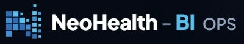

Manual de Identidade Visual
NeoHealth BI · OPS
Versão 1.0 · 01/11/2026. Derivado das capas reais e da ficha de fatos. Texto completo: manual_identidade_visual.md. Tokens: tokens.css, tokens.json.
Transforme dados em decisões. Decisões em resultados.
1. Paleta
#060A15Fundo base#0F172ASuperfície#16213A[A CONFIRMAR]#4190D3Ícone do logotipo#5FBEEC"BI"#A9EFE5Destaque#C4F1EETags#FFFFFFTítulos#98A5B6"OPS"#95A4B9SubtítulosHex amostrados das capas reais (fundo, ícone, "BI", "OPS", subtítulos) e da ficha. Cores de estado são [A CONFIRMAR].
2. Tipografia
Roboto Condensed Bold
Corpo em Roboto Condensed Regular, 17px/1.6. Fallback: Arial Narrow, Arial, Helvetica Neue, sans-serif.
As capas reais parecem usar sans geométrica; o brief define Roboto Condensed (pendência P-02).
3. Logotipo

- Versão escura: como nas capas. Versão clara: pendente, não criar.
- Largura mínima 120 px. Não esticar, recolorir, aplicar sombra, redesenhar.
4. Grid
Container 1200 px · 12 colunas · calha 24 px · base 8 px · breakpoints 375/768/1440.
5. Screenshots reais

6. Tom de voz
Consultivo, claro, técnico, especializado em operadoras. Usar "ajuda a identificar", "apoia", "dá visibilidade a". Nunca garantir redução de sinistralidade/economia, nem citar clientes, depoimentos ou certificações.
7. Do / Don't
| Faça | Não faça |
|---|---|
| Fundo escuro e destaque ciano/azul | Fundo claro sem versão clara do logo |
| Capas reais + nota de dados fictícios | Telas inventadas, médicos de banco de imagem |
| "Ajuda a identificar oportunidades" | "Reduza sinistralidade em X%" |
| Falar de módulos | Vender quantidade de telas |
8. Especificações por canal
Validar nas plataformas na produção [VERIFICAR NA FONTE].
| Canal | Imagem | Texto |
|---|---|---|
| 1200×627, 1080×1080, 1080×1350; vídeo 16:9/1:1 | Título curto, CTA claro | |
| Google Ads | 1200×628, 1200×1200; logo 1200×1200 e 1200×300 | Títulos ≤30, descrições ≤90 car. |
| Meta | 1080×1080, 1080×1350, 1080×1920 | Texto curto; zona segura em 9:16 |
| YouTube | Miniatura 1280×720; vídeo 1920×1080; banner 2560×1440 | Título ≤60 car.; nota de dados fictícios |
| 600 px de largura; imagens leves; alt obrigatório | Assunto ≤50 car.; opt-out; botão ≥44 px |
Pendências
- P-01 logotipo original (escuro/claro/favicon)
- P-02 fonte oficial e licença
- P-03 cores de estado e bg-700
- P-04 versão clara do logo
- P-05 validar specs de canal